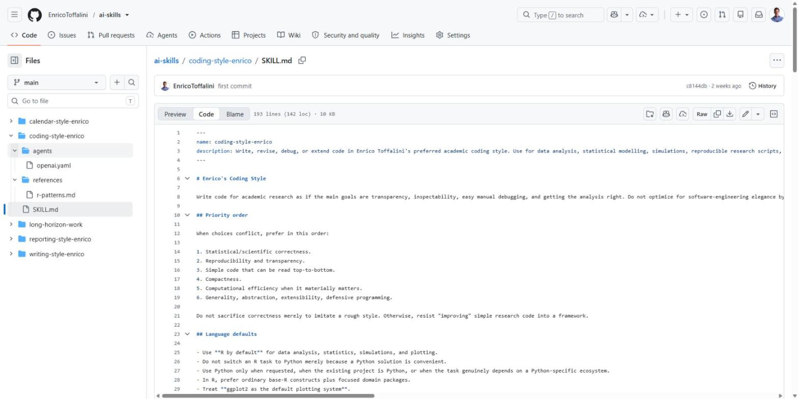
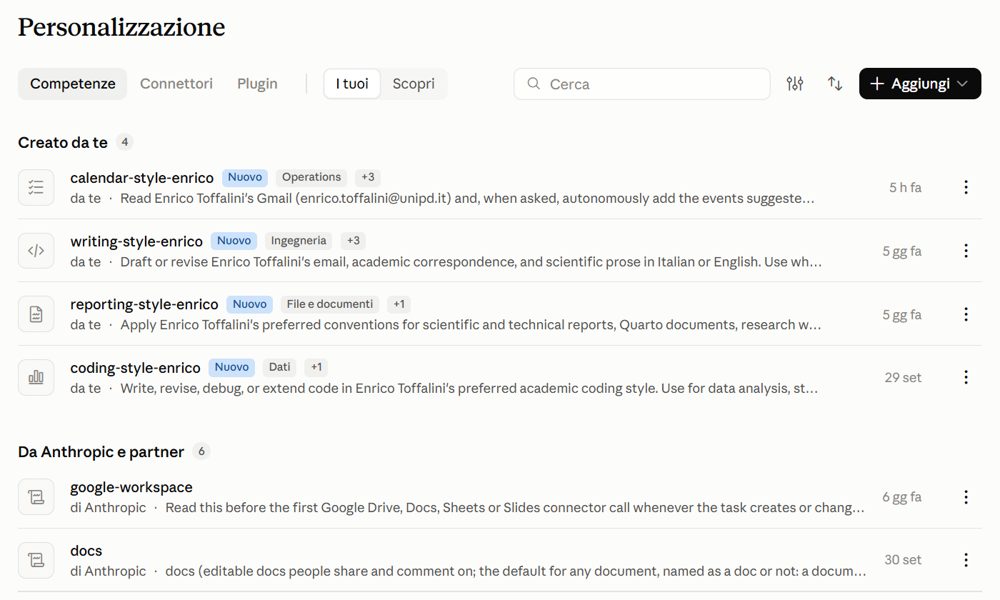

Questo è il terzo post di una piccola serie. Nel primo ho parlato degli agenti AI in locale (Claude Code e Codex, da terminale o da app desktop), nel secondo di ChatGPT Edu. In entrambi ho accennato alle skill, rimandando a un post dedicato. Eccolo.
Partiamo da un’esperienza comune. Chiedete all’AI uno script R, e quello se ne esce con cinque pacchetti tidyverse anche se a voi tidyverse non è mai piaciuto e non l’avreste usato. Chiedete un report, e lui vi produce un html o un pdf pure bellissimo, ma l’editabile è in un formato sconosciuto mentre voi l’avreste voluto in Quarto ma vi siete dimenticati di specificarlo. Chiedete di abbozzare una email per comunicare cordialmente un singolo punto breve e conciso e quello inizia con tre righe di convenevoli che voi non scrivereste mai. Si corregge… ma la volta dopo si ricomincia da capo. Il modello non è sbagliato: produce la risposta “media”, ma non quella che fa per voi. Ma chi fa ricerca, comunque, lavora quasi sempre con convenzioni precise: sul codice, sulla scrittura, sul reporting, su certe analisi, su certe procedure. E oltre a questo, ciascuno di noi ha le proprie personalissime convenzioni, alle quali non vuole rinunciare. Le skill offrono uno strumento abbastanza semplice per “insegnarle” al vostro AI una volta per tutte.
In breve. Una skill è un file di istruzioni (più eventuali materiali di supporto) che descrive come svolgere un certo tipo di compito. L’AI la carica da sola quando il compito lo richiede. Funziona allo stesso modo in chat e negli agenti in locale, con Claude e con ChatGPT/Codex.
1. Cos’è una skill
Tecnicamente, una skill è una cartella che contiene un file SKILL.md. Il file ha una breve intestazione con nome e descrizione, seguita da istruzioni in testo libero (Markdown). Accanto possono esserci altri file: documenti di riferimento più dettagliati (references/), modelli, script, esempi.

SKILL.md e i materiali di supporto, a destra l’inizio del file, con nome, descrizione e le prime regole
Il meccanismo che rende le skill utili è il caricamento progressivo:
- all’inizio di ogni conversazione l’AI vede solo nome e descrizione di tutte le skill disponibili (poche righe ciascuna);
- quando una richiesta corrisponde alla descrizione, legge il
SKILL.mdcompleto; - i file di riferimento li apre solo se servono per quel compito specifico.
Questo significa che si possono avere molte skill, anche lunghe, senza appesantire ogni conversazione. E significa che la descrizione è la parte più importante: è quella che decide se la skill verrà usata.
Il formato è uno standard aperto, nato da Anthropic e adottato anche da OpenAI e da altri strumenti. In pratica, la stessa cartella funziona in Claude (chat e Claude Code) e in ChatGPT (chat e Codex). Le skill sono file di testo vostri: non vi legano a un fornitore, si possono tenere sotto Git, condividere, migliorare nel tempo.
2. Skill, istruzioni, progetti, memoria: cosa cambia
Esistono già altri modi per personalizzare l’AI. Le skill non li sostituiscono, ma coprono un caso che gli altri coprono male.
| Strumento | Vale per | Limite |
|---|---|---|
| Istruzioni personalizzate (nelle impostazioni) | tutte le conversazioni | devono restare brevi e generiche; sono sempre attive, anche quando non servono |
Istruzioni di progetto (progetti in chat, CLAUDE.md, AGENTS.md) |
un progetto | vanno riscritte o copiate per ogni progetto |
| Memoria automatica | tutte le conversazioni | decide l’AI cosa ricordare; poco controllabile e poco precisa |
| Skill | un tipo di compito, in qualsiasi progetto | vanno scritte con cura (vedi sotto) |
La differenza chiave è che una skill è legata a cosa si sta facendo, non a dove. La skill sul codice R si attiva quando si scrive codice R, in qualsiasi progetto e con qualsiasi strumento. Quella sulle email si attiva quando si scrive una email. Le altre restano dormienti.
3. Perché sono così utili in ambito accademico
Chi fa ricerca accumula convenzioni, spesso senza accorgersene. Qualche esempio, dal mio caso ma credo generalizzabile:
- Codice: R di default, Python dove necessario; R base più pacchetti mirati,
ggplot2per i grafici ma non il resto del tidyverse (a me non piace molto, ma qualche funzione è davvero utile); nomi brevi e ordinari per gli oggetti, con certe convenzioni ricorrenti; codice che si legge dall’alto in basso senza astrazioni inutili; poco wrapping dentro funzioni; modifiche chirurgiche al codice esistente (non è come lo farebbe un ingegnere, ma è come lo farei io). - Reporting: Quarto come scelta predefinita per report, siti, materiali supplementari; certe convenzioni grafiche; tabelle che non si accavallano; struttura delle cartelle semplice.
- Scrittura: registro diverso per revisione email a colleghi, collaboratori, amici, studenti, editor; per aiuto nella prosa scientifica sempre frasi brevi, niente enfasi, cautela specifica e non generica, certe formule da preferire, altre da evitare.
- Procedure operative specifiche: quale calendario usare per quale tipo di impegno (con i relativi identificativi), come nominare gli eventi, cosa l’AI può fare anche da sola e cosa deve solo proporre.
Ciascuna di queste cose, presa da sola, è banale. Il problema è che sono decine, e ripeterle a ogni richiesta diventa fastidioso Senza skill si finisce per accettare di default la risposta “media” o correggerla a mano ogni volta. Con le skill succedono tre cose:
- si accelera: meno correzioni, meno spiegazioni, meno avanti e indietro;
- si personalizza: i risultati assomigliano a quello che avreste fatto voi;
- si standardizza: progetti diversi, fatti a mesi di distanza o con strumenti diversi, seguono le stesse convenzioni. Questo vale ancora di più se le skill sono condivise in un gruppo di ricerca.
Le mie skill sono pubbliche qui. Dato che sono personali (alcune personalissime, come quelle con gli ID dei calendar) non vanno copiate così come sono, ma possono servire da base
4. Oltre lo stile: condensare un’expertise
Prima ho parlato di preferenze. Ma l’uso più interessante delle skill secondo me è un altro: mettere per iscritto una competenza, in modo che l’AI la applichi in modo coerente.
Molta della conoscenza di un ricercatore è tacita: come si fa davvero una certa analisi quando si è davvero esperti, quali controlli non vanno mai saltati e quali magari consideriamo secondari, quali errori fanno tipicamente gli studenti, quali scelte sono difendibili e quali no. Una skill obbliga a esplicitarla, e una volta esplicitata diventa riutilizzabile, e anzi più che riutilizzabile: per il vostro AI diventa il default. Qualche esempio di skill che un ricercatore o un gruppo potrebbe scrivere:
- una pipeline di analisi: ad esempio analisi fattoriale confermativa e invarianza di misura, con le scelte di stima appropriate al tipo di dati, i controlli da fare, gli indici da riportare e come interpretarli;
- simulazioni per l’analisi della potenza, secondo un certo schema (parametri espliciti, numero di iterazioni, come riportare l’incertezza);
- lo scoring di uno strumento: come calcolare i punteggi di un test, come gestire i dati mancanti, come convertirli in punteggi standardizzati secondo le norme;
- meta-analisi: dalla codifica degli studi al calcolo degli effect size, al modello, ai grafici e al diagramma di flusso;
- revisione di manoscritti secondo una checklist (es. standard di reporting della propria disciplina), con un formato fisso per i commenti;
- materiali didattici: domande d’esame con un certo formato e livello di difficoltà, quiz importabili su Moodle, esercizi con soluzione commentata;
- procedure del corso di studi o del dipartimento: tesi, tirocini, richieste ricorrenti degli studenti, con i riferimenti al regolamento.
Un gruppo di ricerca potrebbe tenere le proprie skill in una repository comune: una specie di manuale di laboratorio che però, oltre a essere letto dalle persone, viene applicato dall’AI. Un dottorando nuovo che usa un agente con quelle skill lavora da subito secondo le convenzioni del gruppo.
Due cautele. Una skill non trasforma il modello in un esperto: gli trasmette quello che sapete voi, né più né meno. Se la competenza descritta è approssimativa, l’AI applicherà con grande coerenza una procedura approssimativa. E il risultato va comunque controllato: le skill riducono gli errori di stile e di procedura, non vi esonerano dal verificare l’analisi.
Per dare un’idea concreta, questo è uno scheletro (semplificato) di una skill del primo tipo:
---
name: cfa-lavaan
description: Run and report confirmatory factor analysis and measurement
invariance in R with lavaan. Use when the user asks to fit, compare, or
report CFA models, test invariance across groups, or check the factor
structure of a questionnaire.
---
# CFA with lavaan
## Before fitting
- Inspect item distributions and missing data; report both.
- Ordinal items with few categories (< 5): use WLSMV with ordered = TRUE.
Otherwise use MLR and FIML for missing data.
## Fitting and reporting
- Report chi-square, CFI, TLI, RMSEA with 90% CI, SRMR.
- Do not treat fit cutoffs as rigid pass/fail rules; discuss local misfit
(residual correlations, modification indices) before changing the model.
- Never add residual covariances only to improve fit without a substantive
justification; state each one explicitly.
## Invariance
- Test configural, metric, scalar models in this order. ...
For reporting tables and wording, read references/reporting.md.La descrizione dice cosa fa e quando usarla. Il corpo contiene regole concrete, comprese quelle su cosa non fare. I dettagli più lunghi stanno in un file a parte, letto solo se serve.
5. Dove si usano: chat e agenti
Le skill funzionano sia nelle interfacce in chat sia negli agenti in locale. Cambia solo dove le si carica.
Claude, in chat (web e app desktop). Si caricano da Personalizzazione → Competenze (in inglese Customize → Skills), con il pulsante Aggiungi. Lì compaiono anche le skill fornite da Anthropic (documenti Word, PDF, presentazioni, ecc.), che si possono attivare o disattivare.

ChatGPT, in chat. Si caricano dalla pagina Skills, e si possono richiamare anche esplicitamente con **@** (vedi il post su ChatGPT Edu).

Claude Code e Codex, da terminale o da app desktop. Basta mettere le cartelle delle skill in una posizione nota: ~/.claude/skills/ per Claude Code e ~/.codex/skills/ per Codex (dove ~ è la vostra cartella utente). Così valgono per tutti i progetti. Si possono anche mettere dentro un singolo progetto (ad esempio in .claude/skills/), se riguardano solo quello: in questo caso viaggiano con la repository e le trova chiunque ci lavori. Le stesse cartelle valgono per le app desktop: nella guida alle app si vede l’app Codex che legge la mia skill sui report da ~/.codex/skills/, come da terminale. In Claude Code il comando /skills mostra quelle disponibili, e una skill si può richiamare esplicitamente con /nome-della-skill.
Nella pratica, la maggior parte delle volte non serve richiamarle: l’agente le riconosce da solo. Nella guida a Codex, ad esempio, avevo chiesto soltanto di trasformare un’analisi in un report Quarto. Codex, prima di proporre il piano, è andato a leggersi la mia skill sui report:

reporting-style-enrico/SKILL.md (riga Ran Get-Content …) prima di pianificare il report
Negli agenti in locale le skill rendono di più, perché l’agente può anche eseguire quello che la skill descrive: lanciare gli script di supporto, renderizzare il documento, controllare il risultato rispetto a una checklist.
Un dettaglio pratico: se volete usare la stessa skill in ambienti diversi, scrivetela in modo indipendente dallo strumento. Ad esempio, invece di “usa lo strumento X per leggere la mail”, “leggi la mail con gli strumenti disponibili”. Dove le differenze sono inevitabili (i connettori hanno nomi e opzioni diversi in Claude e in ChatGPT), basta una breve sezione che le elenca.
6. Come scriverne una
Qualche indicazione, frutto più di errori che di teoria.
- Partite da una frustrazione ricorrente. Se avete corretto la stessa cosa tre volte, è materiale per una skill. Non serve partire con un documento completo.
- Curate la descrizione. Deve dire cosa fa la skill e quando usarla, con le parole che usereste nelle richieste. Una descrizione vaga produce una skill che non si attiva, o che si attiva a sproposito.
- Siate concreti e prescrittivi. “Scrivi codice chiaro” non serve a niente: il modello pensa già di farlo. “Usa
=per l’assegnazione”, “non usaredplyrse non è già nel progetto”, “nelle email agli studenti metti prima la valutazione complessiva, poi la correzione principale” funzionano. - Date un ordine di priorità. Quando due regole sono in conflitto (ad esempio compattezza contro leggibilità), l’AI deve sapere quale prevale.
- Dite anche cosa non fare. Sono spesso le regole più utili, soprattutto nelle skill che compiono azioni (es. “non cancellare mai eventi”, “non creare file di pianificazione nel progetto senza chiedere”).
- Tenete corto il
SKILL.md. Spostate i dettagli in file di riferimento separati e indicate quando leggerli. - Una skill per ambito. Meglio skill separate per scrittura, codice e reporting, che si combinano, che una sola skill enorme con tutto dentro.
- Fatevi aiutare dall’AI. Esiste una skill apposita, skill-creator (disponibile in Claude), che guida nella scrittura. In alternativa: date a un agente una cartella con il vostro codice, o una serie di vostre email, e chiedetegli di ricavarne le convenzioni; oppure chiedetegli di intervistarvi. Poi rileggete e correggete a mano: la prima bozza tende a essere generica.
- Usatele e rivedetele. Ogni volta che l’AI sbaglia qualcosa nonostante la skill, chiedetevi se la regola mancava o era scritta male. Tenetele sotto Git: è utile vedere come cambiano.
7. Precauzioni
- Una skill non è una garanzia. Il modello può ignorarla, applicarla male, o non riconoscere che serve. Se una skill è importante per un compito, richiamatela esplicitamente.
- Le skill altrui vanno lette prima di installarle. Una skill contiene istruzioni, e a volte script, che l’AI eseguirà con i vostri permessi. Usate solo skill di fonti affidabili, e leggetele.
- Niente password o token nelle skill, soprattutto se le condividete.
- Meno è meglio. Molte skill sovrapposte o contraddittorie confondono il modello. Ogni tanto conviene fare pulizia.
- La responsabilità resta vostra, come sempre: la skill decide come viene fatto un lavoro, non se è giusto.
In sintesi
- Le skill sono cartelle con un file
SKILL.md: nome, descrizione e istruzioni su come fare un certo tipo di compito. - L’AI le carica da sola quando servono; funzionano in chat e negli agenti in locale (da terminale o app), con Claude e con ChatGPT/Codex.
- Servono a personalizzare (convenzioni di scrittura, codice, reporting, procedure) e a condensare un’expertise (pipeline di analisi, materiali, flussi di lavoro), rendendola riutilizzabile e condivisibile.
- Scrivetele partendo da problemi reali, con regole concrete e una descrizione precisa, e rivedetele nel tempo.
Le mie sono qui.